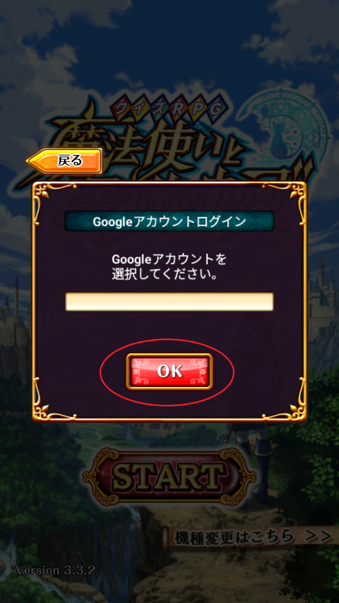

①3.3.3以上になってる黒猫をアンインストールする
まずは言葉通りに黒猫をアンインストールします。

下記画像みたいな状態になって引き継げなくなった人いませんか?
私もそんな風になってしまいました…
ですが問い合わせせずにPW設定をすることが出来ました。
その方法をこれから紹介します。
まずは言葉通りに黒猫をアンインストールします。
まず、下のアイコンをタップして3.3.2のパッケージをDLします。
 ダウンロードが終わったら通知バーから開いてインストールします。
ダウンロードが終わったら通知バーから開いてインストールします。
初めてapkからインストールする場合は野良アプリのインストールをブラウザやAndroidに許可しないといけません。
※インストールが終わったら必ずこのトグルをOffにも脅してください
GooglePlayプロテクトが反応した場合は使用しているブラウザにインストールを許可します
インストールが終わったら3.3.2の黒猫を開いて右下の機種変更からGoogleアカウントでログインしてアカウントからPW設定をします。

ここのリンクからPlayストアの黒猫配布ページに飛びます。
そして更新をタップしてアップデートします。
このページの情報は以上です。